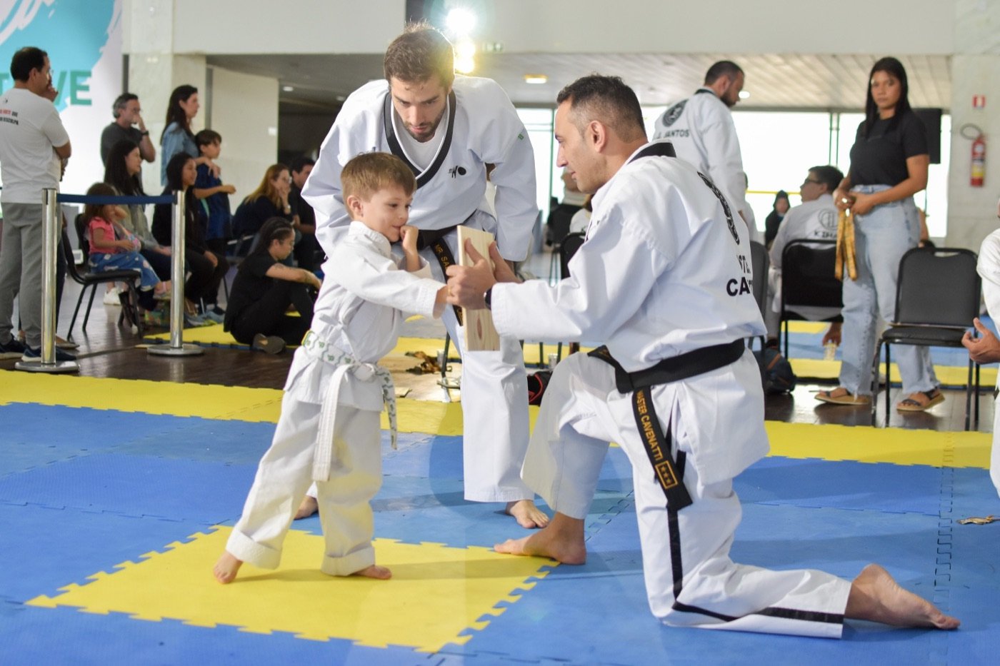
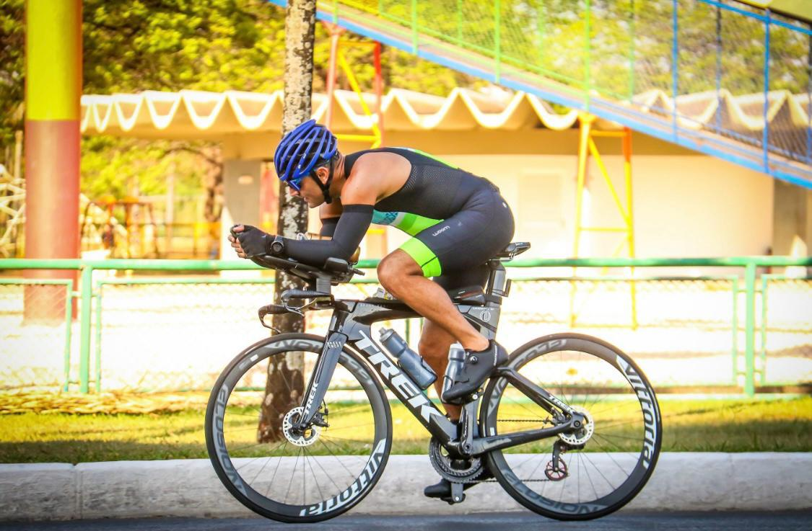
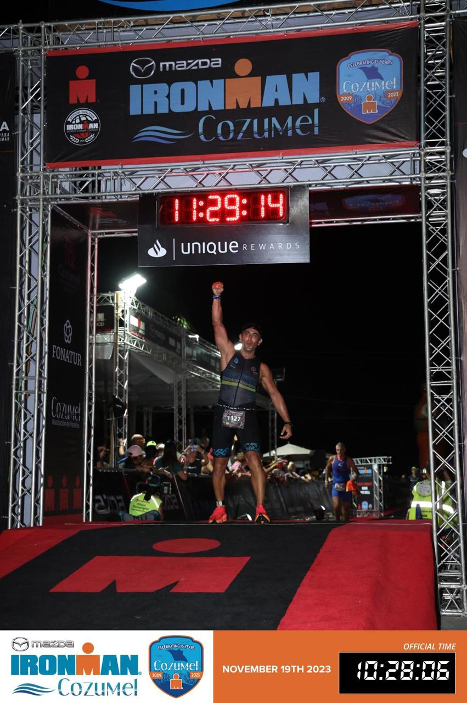
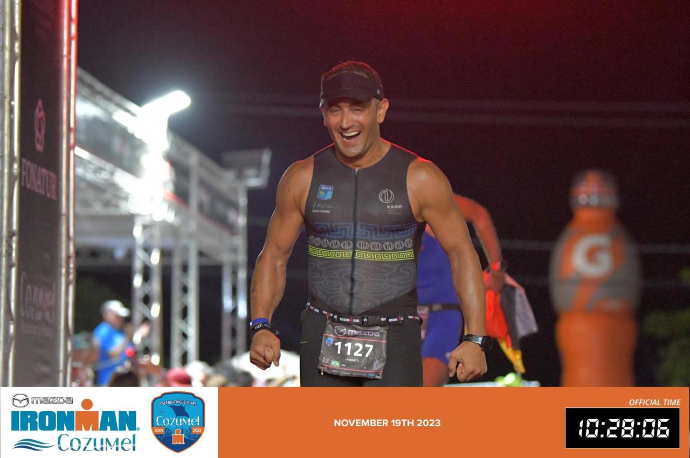
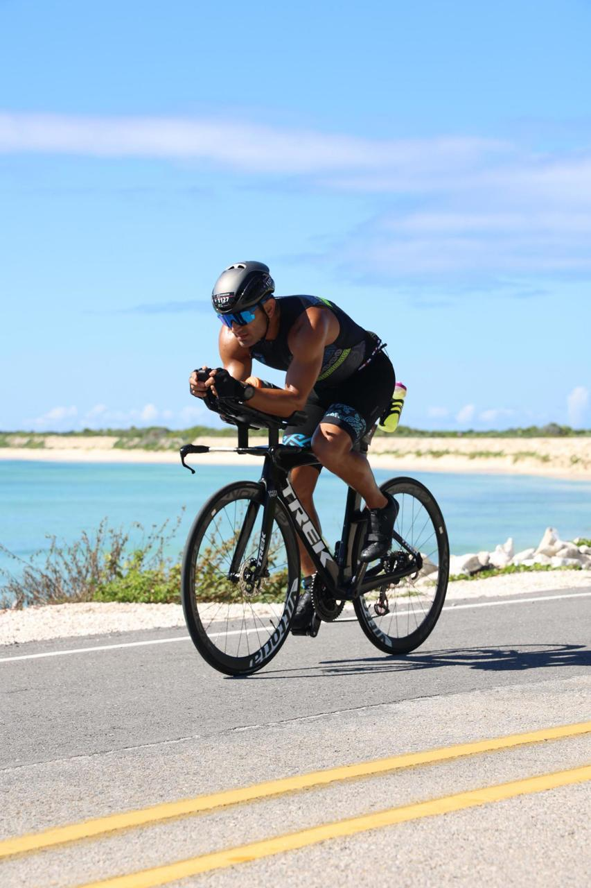

Artes marciais · educação · liderança
MasterCAVENATTI
Mestre, educador e cofundador. Uma trajetória de liderança construída com disciplina e constância.
Participou por dez anos da equipe do Brasil em torneios internacionais de Taekwondo. Reconhecido Mestre nos EUA em 2018, conquistou o segundo mestrado nos EUA em 2024. Em programas e palestras, leva a disciplina do treinamento para a vida real.
Convide o Master
Sobre
Quem ele é, além do tatame.
Master Cavenatti é cofundador da Kihap, mestre de Taekwondo e formado em Administração. Durante dez anos, integrou a equipe do Brasil em torneios internacionais. Sua atuação reúne ensino, gestão e desenvolvimento de pessoas. Divide a vida com a Mrs Master e é pai de Benício e Serena. A jornada no triatlo também faz parte de sua história; família, esporte e trabalho exigem escolhas sustentadas com constância.

Nas palavras do Master
“Aprendi cedo que faixa preta não é um ponto de chegada, é o hábito de voltar ao treino todos os dias. É isso que ensino: não se trata de fazer mais, e sim de fazer com constância aquilo que você já sabe que importa.”
Master Cavenatti
Trajetória
Da prática marcial à formação de pessoas.
4x campeão mundial, 3x IronMan
O percurso começou no Taekwondo, passou por uma década na equipe do Brasil em torneios internacionais e ganhou escala no ensino e na gestão da Kihap. O triatlo ampliou sua experiência com treino, resistência e constância.
- 1994
Início no Taekwondo.
- 1997
Faixa preta 1º Dan.
- 2004
Certificação como instrutor.
- 10 anos
Na equipe do Brasil em torneios internacionais.
- 2018
Reconhecido Mestre nos Estados Unidos.
- 2024
Segundo mestrado nos Estados Unidos.
- Hoje
Cofundador da Kihap, com atuação no ensino e na liderança.
Além do tatame
A jornada do triatlo.
O triatlo faz parte da trajetória esportiva do Master. As imagens de treino e de prova mostram outra expressão da disciplina que ele leva ao ensino: voltar à prática e seguir até o fim.



Formações
Formação que se transforma em ensino.
Graduação em Administração.
Certificação como instrutor de Taekwondo · 2004.
Reconhecimento como Mestre nos EUA · 2018.
Segundo mestrado nos EUA · 2024.
Millionaire Mind Intensive · T. Harv Eker.
Mission to Million · T. Harv Eker.
Train the Trainer · T. Harv Eker.
Método CIS · Paulo Vieira.
Método Origem.
Palestras
Disciplina que encontra a vida real.
Nas palestras, o Master conecta artes marciais e empreendedorismo a escolhas que exigem clareza, método e continuidade. O conteúdo parte do desafio do público e busca aplicação na vida e no trabalho.
Solicite uma proposta de palestra

Contato